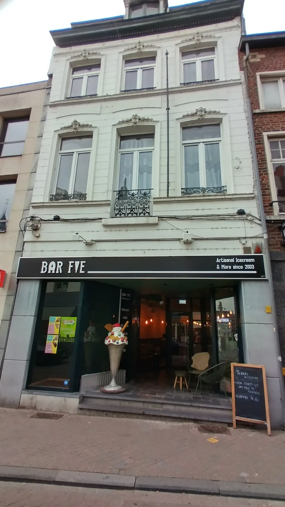
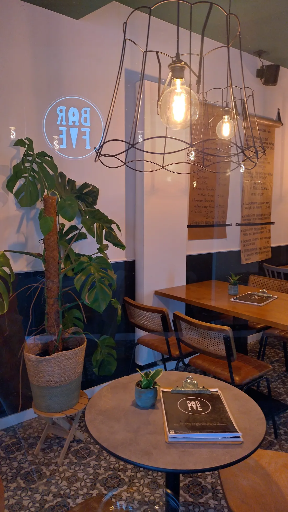

Sofie & Tom
Gewoon in de Leuvensestraat.
Bar Fie is de zaak van Sofie Anthoons en Tom Van Overbeke. Ze draaien ijs, zetten koffie en koken elke middag iets vers. Niet ingewikkeld, wel met zorg.
"Je moet het soms niet ver gaan zoeken."Sofie, in een gesprek met UNIZO
Tiense Starter van het JaarUitgereikt in Tienen
Handmade in BelgiumLabel van UNIZO, 2023